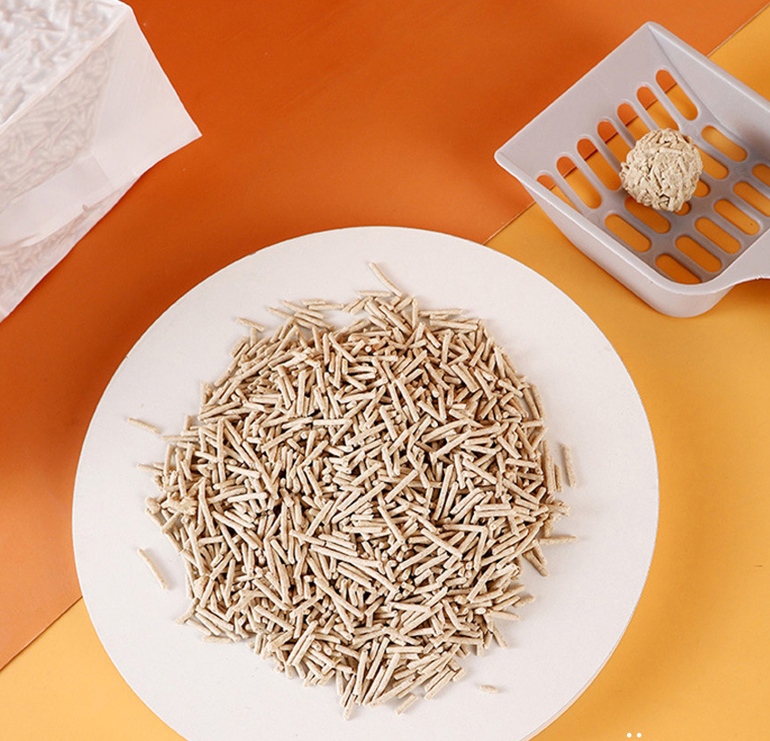
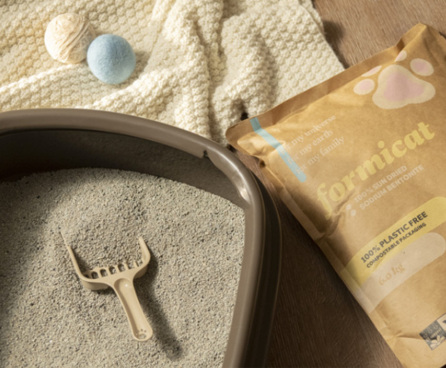
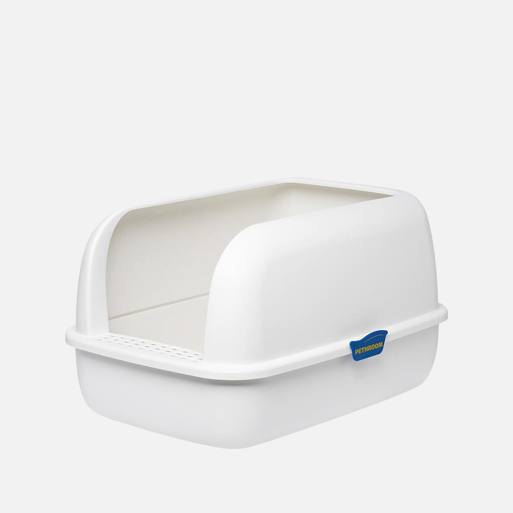
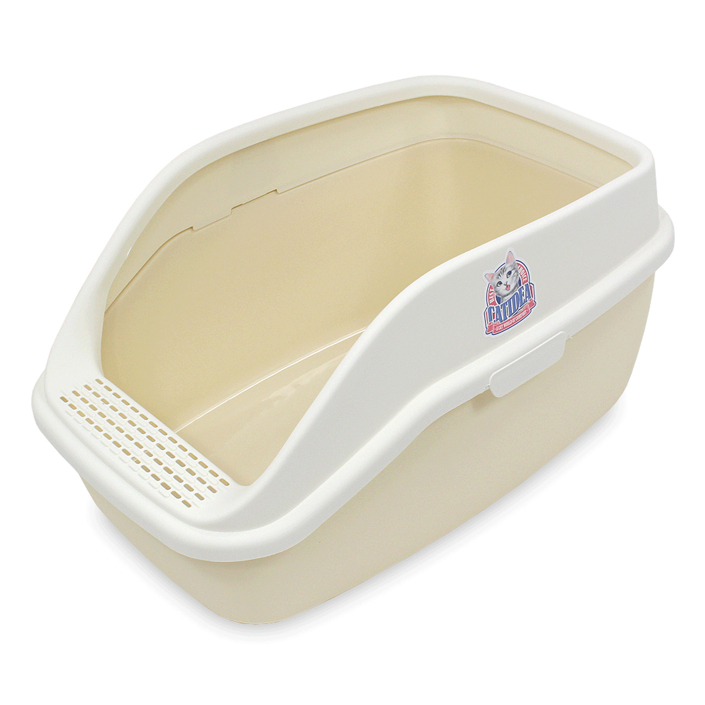

🛒내돈내산 리뷰 1🛒
🙏PPL 없는 김집사의 아주 주관적인 내돈내산 템이므로 고양이 바이 고양이 일수도 있음.🙏

📌고양이 모래📌
고양이 모래
김집사는 아직도 김고양이 모래 유목민 생활 중임,, 아직도 최적화 모래 찾는 중,,
⭐까다로운 김집사의 PICK⭐
두부 모래 추천
벤토나이트 모래 VS 두부 모래 ,,
김집사가 두 유형의 모래를 쓴 결과 두부모래의
가루 날림이 적어서 선호함
(우리 김고양이는 모래 종류를 가리지 않고 내가 가림)
🛒내돈내산 리뷰 2🛒
🙏PPL 없는 김집사의 아주 주관적인 내돈내산 템이므로 고양이 바이 고양이 일수도 있음.🙏

📌고양이 화장실📌
고양이 화장실
노르웨이 숲이 다른 종의 고양이들에 비해 덩치가 큼,, 대형묘의 자태라 살앙스럽다❤️
⭐까다로운 김집사의 PICK⭐
📌무조건
큰 화장실로!📌
아깽이 때는 물론 몸집에 맞게 써야하지만
덩치가 커지면 아가 때 화장실을 그대로 사용은 힘듦
그래서 무조건 큰 화장실을 추천!!
개인적인 생각이므로 고양이 사정에 따라 써주면 됨